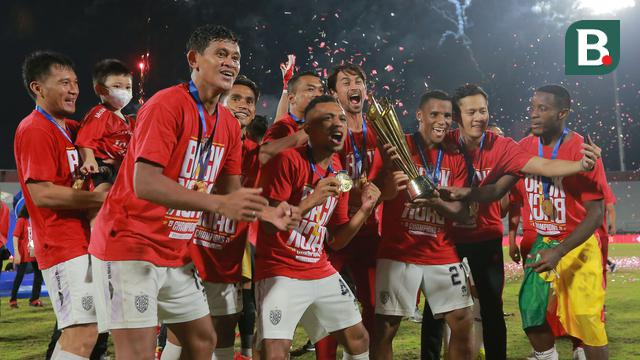

Draft Jadwal Pekan Pertama Liga 1: Bali United Vs Persija Jadi Laga Pembuka pada 23 Juli 2022
30
Mar
Forum Moto Sport
Ayo ikut komunitas moto sport dengan mendaftar pada website ini.
17
Jan
Kompetisi desain
Ikut yok kompetisi mendesain motor agar lebih menarik dan dapatkan hadiahnya.